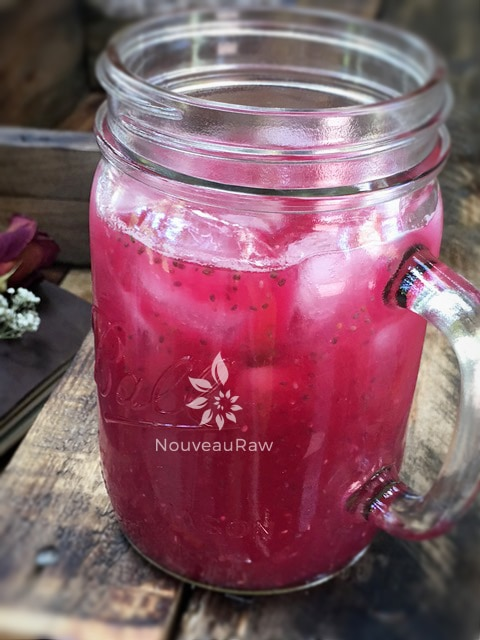

Alkalizing Watermelon Chia Agua Fresca

~ raw, vegan, gluten-free, nut-free, Paleo ~
A diet rich in alkaline foods helps reduces inflammation in the body. Inflammation is the body’s attempt at self-protection; the aim being to remove harmful stimuli, including damaged cells, irritants, or pathogens – and begin the healing process. (source)
So, as you can see, inflammation is a silent little helper thing, BUT it’s also a sign of an underlying issue. By keeping our bodies more alkaline, we can help support our bodies. Speaking of which…
Watermelon is an alkaline superstar with a pH of about 8.8. Fresh, sweet watermelon is also low in calories, high in fiber, a mild diuretic, and rich in vitamins A, C, and lycopene.
There are many ways that we can help our bodies in becoming more alkaline. You can start by choosing only organic foods that are GMO-free to avoid pesticides, chemicals, and other contaminants. I know that it’s not always feasible, but I encourage you to do your best.
Another simple tactic is to drink one or two (8 oz) glasses of water with one tablespoon of organic apple cider vinegar mixed it. Do this daily thirty to sixty minutes before your meals. It has a dual purpose, as it will also help aid in the digestion of your food.
Another low-cost way is to drink lemon water, which helps to clear the body of excess acids and create an alkaline-forming state. Mix the juice of half an organic lemon with two teaspoons of raw honey and eight ounces of warm water. Drink first thing in the morning to flush the system. Let’s start there… and see how you feel.
To amp up the benefits of this drink, I mixed some of my Sweet and Spicy Detox Juice, which is excellent for supporting your liver. The added chia seeds not only added excellent omega’s to the drink, but it also added fiber, which helps to slow down the digestion of all the nutrients going into your body so they can be fully absorbed.
yields 1 3/4 cups
Preparation:
- Combine the watermelon juice, Sweet and Spicy Detox Juice, and chia seeds in a mason jar. Place the lid on tight and give it a good shake. Allow it to sit in the fridge for 15 minutes so the chia can thicken.
- When ready to drink, shake again, and enjoy.
- It is always best to enjoy fresh juices right away to get the maximum nutrients. If you can’t get to it right away, pour into a jar, filling it up to the top, so it isn’t exposed to any air. This will slow down the oxidization a little.

© AmieSue.com